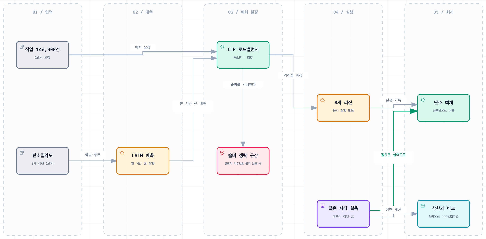

CAST — 탄소 인식 클라우드 스케줄러
탄소 배출을 줄이는 작업 스케줄러
Impact
- 5종선행연구를 직접 구현해 자기 결과와 나란히 비교
- 1명령표·그림·스윕을 통째로 재생성하는 재현 하네스
- 56.9%맡은 리전 배정만으로 줄인 탄소 — 홈 리전 즉시 실행 대비 (시뮬레이션)
Background
같은 연산이라도 어느 지역에서 몇 시에 돌리는지에 따라 배출되는 탄소가 달라집니다. 급하지 않은 작업을 전기가 깨끗한 리전과 시간대로 옮기는 스케줄러입니다. 4인 팀이고 역할은 이렇게 나눴습니다.
- 팀원 — 작업을 미뤄서 깨끗한 시간대로 옮기는 스케줄러 본체, 탄소집약도를 예측하는 LSTM
- 본인 — 리전 배정 ILP 로드밸런서, 용량을 고려한 온라인 확장, 선행연구 5종 재현, 재현성 확인용 실행 하네스
8개 리전의 1년치 실측 탄소집약도 위에 작업 146,000건을 합성해 돌린 시뮬레이션입니다. 탄소집약도는 실측값이고 작업 목록은 생성한 것입니다.
Architecture

Contributions
배정을 정수최적화 문제로
슬롯마다 들어온 작업을 8개 리전에 배정합니다. 목적함수는 탄소집약도와 네트워크 지연의 가중합이고 제약은 리전별 동시 실행 한도와 전량 처리입니다. 어느 리전에도 넣을 수 없는 작업이 생기면 해가 사라지기 때문에, 미배정을 허용하는 변수를 따로 두고 비용을 물렸습니다.
솔버를 건너뛰어도 되는 구간
1년치를 전부 돌리는 실험에서는 슬롯마다 솔버를 부르는 비용이 그대로 실험 시간이 됩니다. 모든 리전의 가용량이 배치 크기보다 크면 용량 제약이 아무것도 묶지 않아서, 각 작업이 따로 가장 싼 리전을 고르는 것과 결과가 같습니다. 그 조건을 판별해 솔버를 건너뛰게 했습니다.
예측으로 라우팅, 실측으로 정산
처음에는 감축 효과가 실제보다 크게 나왔습니다. 작업을 옮길 때 쓴 예측 탄소집약도로 감축량까지 계산하고 있어서 예측이 빗나간 만큼이 감축으로 들어갔기 때문입니다. 라우팅은 예측값으로 하고 정산은 같은 시간의 실측값으로만 하도록 입력을 나눴습니다.
결과
기준선은 홈 리전에서 즉시 실행하는 경우입니다. 제가 맡은 리전 배정만 적용하면 탄소가 56.9% 줄고 지연이 36.2ms 늘었습니다. 여기에 팀원이 맡은 시간 이동을 결합한 전체 구성은 62.9%이고, 작업 146,000건 전량이 마감 안에 처리됐습니다. 탄소와 지연의 가중치는 고정하지 않고 매 슬롯 파레토 곡선의 무릎점에서 자동으로 고르게 했습니다.